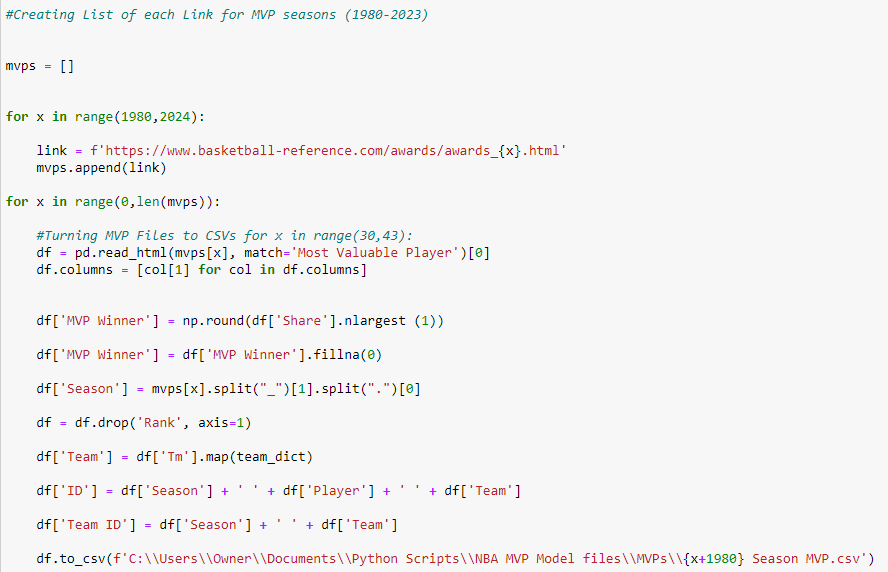
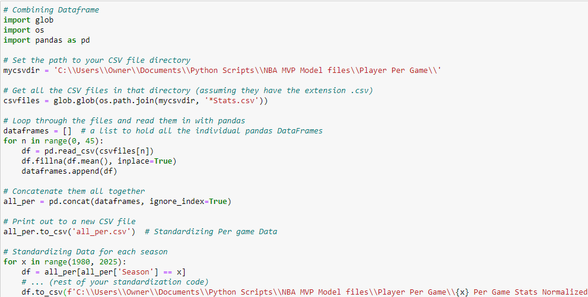
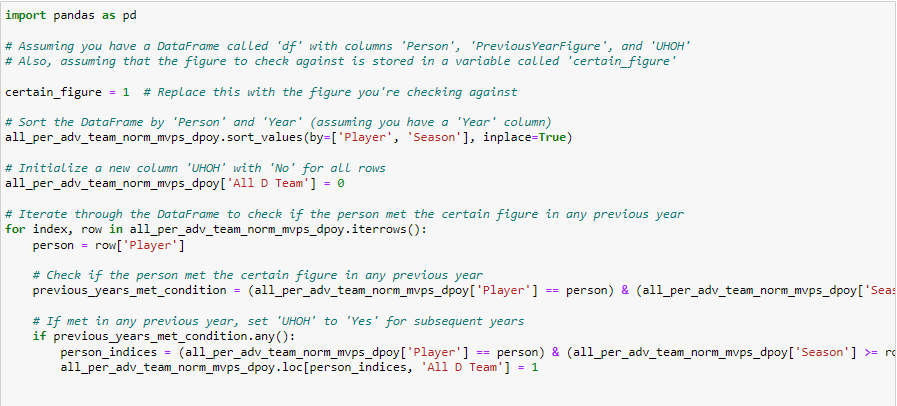

NBA Award Predictions
Leveraging linear regression, Selenium, and Pandas to forecast NBA MVP, DPOY, and ROTY, unraveling statistical patterns for season accolades in basketball.
Gathering the data using Selenium
In my latest project, I embarked on the exciting journey of creating a regression model to predict NBA MVP (Most Valuable Player) winners. The foundation of this project involved harnessing the power of Python, Selenium, and Basketball-Reference.com to gather essential data spanning the years 1980 to 2023. To kickstart the process, I utilized Selenium to systematically compile a list of URLs corresponding to each NBA season's MVP awards page on Basketball-Reference.com. The Python script dynamically generated these links, saves the data to a DataFrame, and save the data to my folder as a csv, allowing for seamless navigation through the years. Here's a snippet of the code:
I used some semblance of this code to bring in MVPs, ROTYs, DPOYs, Per Game Stats, Team Stats, and a range of advanced stats.
Cleaning the data
In the pursuit of building a robust NBA Awards prediction model, the next crucial steps involve consolidating individual player statistics into one comprehensive dataframe and standardizing the data for meaningful analysis. Let's delve into the Python code that accomplishes these tasks:

In this phase, the script navigates through the directory containing individual player statistics files, reads them into Pandas DataFrames, and concatenates them into a single dataframe named all_per.csv. This part is repeated for all stats we pulled from Basketball Reference. Following this, the code proceeds to standardize the per-game statistics for each season, providing a consistent scale for the subsequent regression model. I would proceed to combine these dataframes to create one huge dataframe for all statistics, joining by "Player ID".
Creating a "Won Before" Columns
In the dynamic realm of sports awards, there exists a fascinating phenomenon known as the "winner's bias." The idea is simple: once you've clinched a prestigious award, the odds of repeating that feat increase substantially. In the context of NBA Awards predictions, this bias is a crucial factor to consider. To address this, I've incorporated a strategic approach into my regression model. Let's take a closer look at the Python code responsible for identifying whether a player has achieved certain figures in previous years, signaling a heightened likelihood of future victories.

This code efficiently flags instances where a player has achieved certain figures in MVP, DPOY, or other relevant awards in previous years. This strategic consideration adds a layer of sophistication to the model, acknowledging the winner's bias in the pursuit of more accurate predictions.
Building the regression Model for the MVP Award
In the pursuit of unraveling the mysteries behind NBA MVP predictions, I've deployed a sophisticated regression model designed to factor in player statistics and team dynamics. Let's dissect the key elements of the model:
Features used: 'FG', 'FGA', 'FG%', '3P', '3PA', '3P%', '2P', '2PA', '2P%', 'eFG%', 'FT', 'FTA', 'FT%', 'ORB', 'DRB', 'TRB', 'AST', 'STL', 'BLK', 'TOV', 'PF', 'PTS', 'AST%', 'STL%', 'BLK%', 'TOV%', 'USG%', 'WS', 'BPM', 'VORP', 'SOS', 'SRS', 'Team ORtg', 'Team DRtg', 'Team NRtg', 'Team TS%', 'GameScore'
Evaluation Metrics: MAE, MSE, RMSE
MAE (Mean Absolute Error): A mere 0.0087 units stand between our predictions and the actual values on average. This metric serves as a testament to the precision embedded in our model, reflecting its ability to navigate the intricate landscape of MVP predictions with finesse.
MSE (Mean Squared Error): At 0.0018, the model exhibits sensitivity to larger deviations, capturing nuances that transcend the ordinary. This heightened sensitivity aligns with the quest for excellence in predicting MVP outcomes.
RMSE (Root Mean Squared Error): Standing at 0.0426, the RMSE offers a digestible measure of the average error size in our predictions. It encapsulates the essence of our model's performance, where precision meets pragmatism.
MVP Prediction
Last Updated: 4/17/2023
DPOY Prediction
Features used: 'ORB', 'DRB', 'TRB', 'STL', 'BLK', 'PF', 'PTS','STL%', 'BLK%', 'DWS', 'BPM', 'VORP', 'SOS', 'SRS', 'Team DRtg', 'Team NRtg',"DPOY Winner", "All D Team",'W'
MAE is: 0.006837
RMSE is: 0.037482
MSE is: 0.00140492
ROTY Prediction
Features used: "MP",'FG', 'FGA', 'FG%', '3P', '3PA', '3P%', '2P', '2PA', '2P%', 'eFG%', 'FT', 'FTA', 'FT%', 'ORB', 'DRB', 'TRB', 'AST', 'STL', 'BLK', 'TOV', 'PF', 'PTS','GameScore', 'USG%', 'WS', 'BPM',"ROTY Winner",
MAE is: 0.333283
RMSE is: 0.008559
MSE is: 0.0925148
In the world where data meets the hardwood, this project serves as a testament to the endless potential for uncovering patterns, making informed predictions, and adding a new layer to the rich tapestry of NBA analytics. As we wrap up this assignment, the ball is now in your court to continue exploring, questioning, and pushing the boundaries of what's possible in the dynamic field of sports analytics.